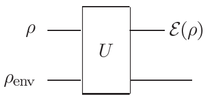
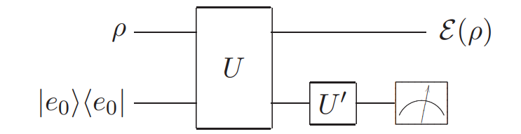

The quantum operations formalism is a general tool for describing the evolution of quantum systems in a wide variety of circumstances, including stochastic changes to quantum states, much as Markov processes describe stochastic changes to classical states.
A natural way to describe the dynamics of an open quantum system is to regard it as arising from an interaction between the system of interest, which we shall call the principal system, and an environment, which together form a closed quantum system, as illustrated below:

We assume (for now) that:
E(ρ)=trenv[U(ρ⊗ρenv)U†]
An important assumption is made in this definition – we assume that the system and the environment start in a product state. In general, of course, this is not true. Quantum systems interact constantly with their environments, building up correlations.
Quantum operations can be represented in an elegant form known as the operator-sum representation. Let ∣ek⟩ be an orthonormal basis for the (finite dimensional) state space of the environment, and let ρenv=∣e0⟩⟨e0∣ be the initial state of the environment. Then the operator can be rewritten as:
E(ρ)=k∑⟨ek∣U[ρ⊗∣e0⟩⟨e0∣]U†∣ek⟩=k∑EkρEk†
where Ek≡⟨ek∣U∣e0⟩ is an operator on the state space of the principal system.
Remark: For ⟨a∣U∣b⟩, if the dimension of ∣a⟩,∣b⟩,U is not matched, then we just let notation: ⟨a∣U∣b⟩≡(I⊗⟨a∣)U(I⊗∣b⟩).
There is no loss of generality in assuming that the environment starts in a pure state, since if it starts in a mixed state we are free to introduce an extra system purifying the environment (later).
Completeness relation:
1=tr(E(ρ))=tr(k∑Ek†Ekρ)
So ∑kEk†Ek=I. There are also quantum operations ∑kEk†Ek≤I，they describe processes in which extra information about what occurred in the process is obtained by measurement.
The operator-sum representation is important because it gives us an intrinsic means of characterizing the dynamics of the principal system. The operator-sum representation describes the dynamics of the principal system without having to explicitly consider properties of the environment; all that we need to know is bundled up into the operators Ek, which act on the principal system alone.
# Physical interpretation of the operator-sum representation
This gives us a beautiful physical interpretation of what is going on in a quantum operation with operation elements {Ek}.
The action of the quantum operation is equivalent to taking the state ρ and randomly replacing it by ρk=tr(EkρEk†)EkρEk†, with probability tr(EkρEk†).
In this sense, it is very similar to the concept of noisy communication channels used in classical information theory; in this vein, we shall sometimes refer to certain quantum operations which describe quantum noise processes as being noisy quantum channels.
We define a quantum operator E as a map from the set of density operators of the input space Q1 to the set of density operators for the output space Q2, with the following three axiomatic properties:
tr(E(ρ)) is the probability that the process represented by E occurs, when ρ is the initial state. Thus, tr(E(ρ))∈[0,1].
E is a convex-linear map on the set of density matrices, that is:
E(i∑piρi)=i∑piE(ρi)
E is a completely positive map. That is, E(A) must be positive for any positive density operator A.
Furthermore, if we introduce an extra system R of arbitrary dimensionality, it must be true that (I⊗E)(A) is positive for any positive operator A on the combined system RQ1, where I is the identity map on R.
If there is a ρ such that tr(E(ρ))<1, then the quantum operation is non-trace-preserving, so on its own E does not provide a complete description of the process that may occur in the system.
Remark: We need to talk about I⊗E in details. For example, if I:Ck×k→Ck×k, E:C2×2→C2×2, then we have (I⊗E):C2k→C2k:
Notice, the induced map I⊗E can only be left-induce where E⊗I is invalid.
Example: positive map is not complete positive.
Transpose is a positive map, let Trans:C2×2→C2×2 be the transpose map. Then we consider the induced map I⊗Trans, and apply it on the density operator of 2∣00⟩+∣11⟩:
And think, what physical process does E,F represents separately?
For E, it’s “we flipped a fair coin, and, depending on the outcome of the coin toss, applied either the unitary operator I or Z to the quantum system”.
For F, it’s performing a projective measurement in the ∣0⟩,∣1⟩ basis, with the outcome of the measurement unknown.
These two apparently very different physical processes give rise to exactly the same dynamics for the principal system.
When do two sets of operation elements give rise to the same quantum operation? Suppose we supplement the interaction U with an additional unitary gate U′ on the environment alone:

So the new operator Fk is composed by the element of U′ and original operators Ej.
Theorem: Suppose {E1,...,Em} and {F1,...,Fn} are operation elements giving rise to quantum operations E and F, respectively. By appending zero operators to the shorter list of operation elements we may ensure that m=n. Then E=F if and only if there exist complex numbers uij such that Ei=∑juijFj, and uij is an m×m unitary matrix.
This theorem can be used to answer another interesting question: what is the maximum size of an environment that would be needed to mock up a given quantum operation?
Theorem: All quantum operations E on a system of Hilbert space dimension d can be generated by an operator-sum representation containing at most d2 elements,
E(ρ)=k=1∑MEkρEk†
where 1≤M≤d2.
# Examples of quantum noise and quantum operations
In this section we examine some concrete examples of quantum noise and quantum operations. These models illustrate the power of the quantum operations formalism we have been developing.
The simplest operation related to measurement is the trace map:
ρ→tr(ρ)
which we can show is indeed a quantum operation, in the following way. Let HQ be any input Hilbert space, spanned by an orthonormal basis ∣1⟩,...,∣d⟩, and let HQ′ be a one-dimensional output space, spanned by the state ∣0⟩. Define:
so that E is a quantum operation. The operation is identical to the trace function, means that the “measurement” will be 100% collapse into HQ′, which is ∣0⟩⟨0∣.
An even more useful result is the observation that the partial trace is a quantum operation.
Suppose we have a joint system QR, and wish to trace out system R. Let ∣j⟩ be a basis for system R. Define a linear operator Ei:HQR→HQ by:
Ei(j∑λj∣qj⟩∣j⟩)≡λi∣qi⟩
where ∣qj⟩ are arbitrary states of system Q. Define:
Static measures quantify how close two quantum states are, while dynamic measures quantify how well information has been preserved during a dynamic process.
This quantity is sometimes known as the L1 distance or Kolmogorov distance.
Interpretation: the quantity being maximized is the difference between the probability that the event S occurs.
A second measure of distance between probability distributions, the fidelity of the probability distributions:
F(px,qx)=x∑pxqx
Unfortunately, a similarly clear interpretation for the fidelity is not known. However, in the next section we show that the fidelity is a sufficiently useful quantity for mathematical purposes to justify its study, even without a clear physical interpretation.
Suppose a random variable X is sent through a noisy channel, giving as output another random variable Y , to form a Markov process X→Y. For convenience we assume both X and Y have the same range of values, denoted by x. Then the probability that Y is not equal to X, p(X=Y), is an obvious and important measure of the degree to which information has been preserved by the process.
Surprisingly, this dynamic measure of distance can be understood as a special case of the static trace distance!
Let’s make a copy of X, denoted as X~=X, and use trace distance to measure the distance between the initial pair (X~,X) and the final states pair (X~,Y):
If we want to transmit one-bit information X (0 or 1), and the bit may be flipped due to the noise. So instead of transmitting it directly, we copy it three times: XXX then transmit. So if one receives 001, he may think that the third bit is flipped due to the noise and the information is 0 itself.
Compared with classical information, the quantum information raises three difficulties we need to deal with:
No cloning.
Errors are continuous.
Measurement destroys quantum information.
If we want to transmit one-qubit information ∣ψ⟩=a∣0⟩+b∣1⟩, then we first encode it to a∣000⟩+b∣111⟩, which is quite easy. Then:
Error detection or Syndrome diagnosis: Consider the four projectors:
For example, if the first bit is flipped, then ∣ψ⟩=a∣100⟩+b∣011⟩, then ⟨ψ∣P1∣ψ⟩=1. Then we know that the first bit is flipped.
Notice that we don’t know anything about a,b now.
Recovery: Just apply the X gate on the qubit just detected.
If the channel is phase flip channel, then we just encode a∣0⟩+b∣1⟩ into state ∣ψ⟩=a∣+++⟩+b∣−−−⟩. Then the phase flip would flip ∣1⟩ to −∣1⟩, that is ∣+⟩ to ∣−⟩.
So we need all 9 qubits. If a bit flip error happens to any of them, we just measure the observable Z1Z2=∣00⟩⟨00∣+∣11⟩⟨11∣−∣01⟩⟨10∣−∣10⟩⟨10∣ which is used to “compare the two qubits”, if they are the same, then the expectation of measurements is ⟨ψ∣Z1Z2∣ψ⟩=1. Otherwise, it would be −1.
So we just compare the adjacent three qubits. If only one of then is different from the other two, then it is flipped with high probability.
For phase flip, if any of the three qubits in the first block is phase flipped, that is, 2∣000⟩+∣111⟩→2∣000⟩−∣111⟩, then what we do is to compare the sign of the first and the second block. For example,
Obviously, for ∣ψ⟩=2∣000⟩+∣111⟩, we have ⟨ψ∣X⊗3∣ψ⟩=⟨ψ∣ψ⟩=1，while for ∣ψ⟩=2∣000⟩−∣111⟩, we have ⟨ψ∣X⊗3∣ψ⟩=−1. So measuring the observable X1X2X3X4X5X6 is just to make out whether the first three-qubits block and the second three-qubits block has the same phase. If same, the expectation of measurement is 1, otherwise is −1.
So given a state 22(∣001⟩+∣110⟩)(∣000⟩−∣111⟩)(∣010⟩+∣101⟩), we first analyze that the third and the eighth qubits are flipped, and recover them to 22(∣000⟩+∣111⟩)(∣000⟩−∣111⟩)(∣000⟩+∣111⟩), then analyze that the second block is phase flipped, and recover to 22(∣000⟩+∣111⟩)(∣000⟩+∣111⟩)(∣000⟩+∣111⟩), so we know that the bit we want to transmit is ∣0⟩.
Now suppose an arbitrary noise occurs, we use a quantum operation to describe it. Let the encoded state:
And the operator Ei can be expanded as (We now assume that the noise is only affecting the first qubit):
Ei=ei0I1+ei1X1+ei2Z1+ei3X1Z1
So the unnormalized quantum state Ei∣ψ⟩=ei0∣ψ⟩+ei1X1∣ψ⟩+ei2Z1∣ψ⟩+ei3X1Z1∣ψ⟩. If we know measure the observable Z1Z2, then the state would be collapsed into one of the four state ∣ψ⟩,X1∣ψ⟩,Z1∣ψ⟩,X1Z1∣ψ⟩ and we just diagnose the error and recover it.